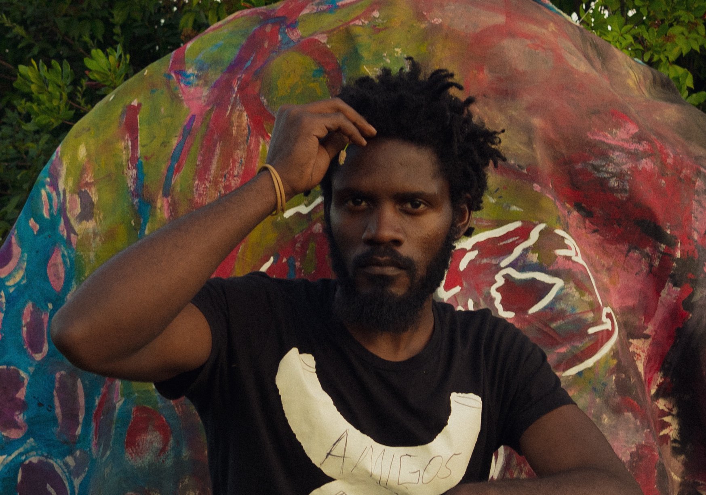
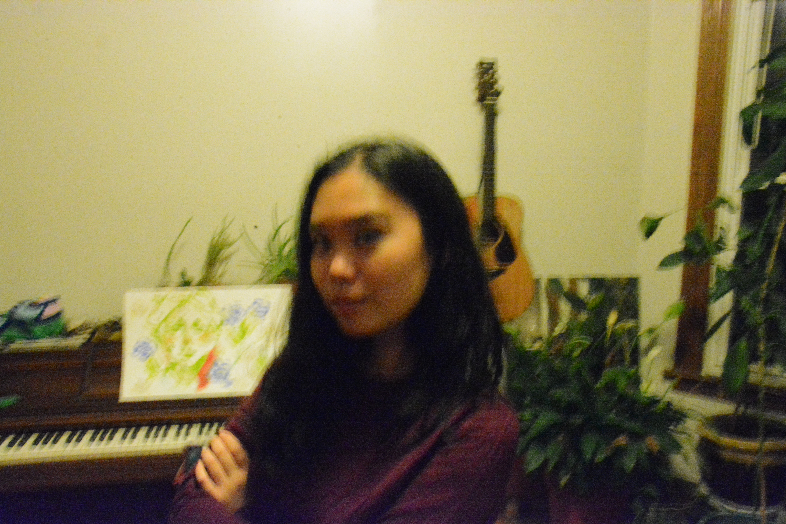

We paint, but painting just happens to be the medium we often use. Kuli is a performer; he performs paintings. Jisu is a theorist; her paintings are studies. Together, we are exploring our art through the medium of the show itself.

We are working on a series of pop-up art shows with a long-term vision of having a place of our own. We thought of these pop-ups because we wanted a show that could feel alive. Each one would happen in a different scene, with different surroundings.

Our art, setup, and events in each pop-up space would reflect and engage these differences rather than try to flatten them for a perfect reproduction.
These shows are about how our art interacts with the audience.
How can we give people a chance to really look at art?
And spend time with art, see how other art forms can interact with it?
We are trying to push the envelope for other artists as well as ourselves.